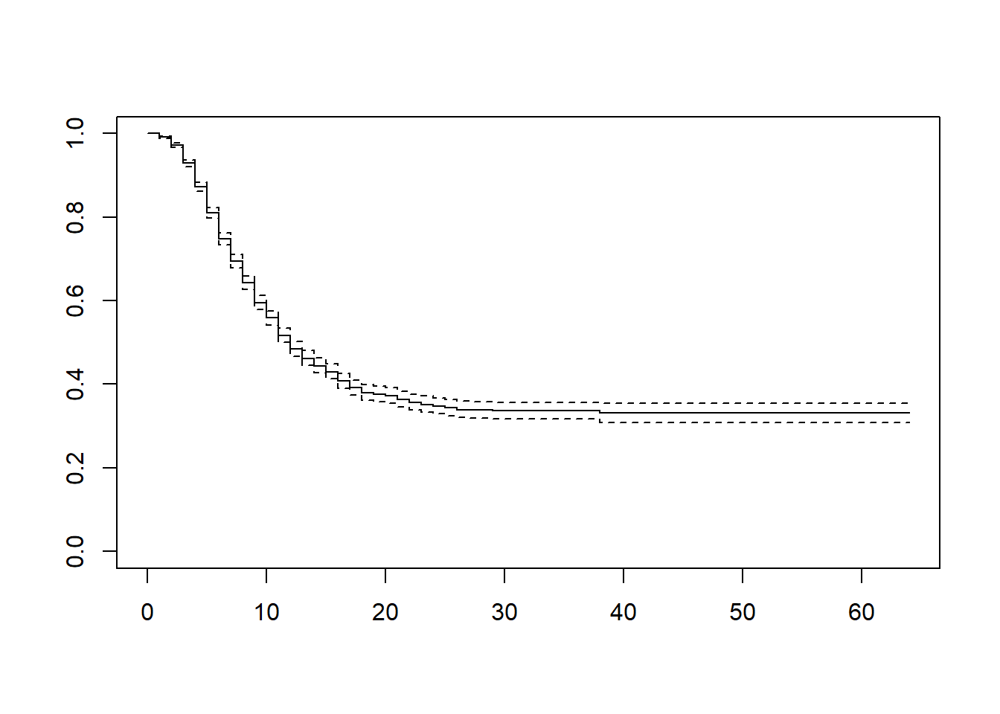
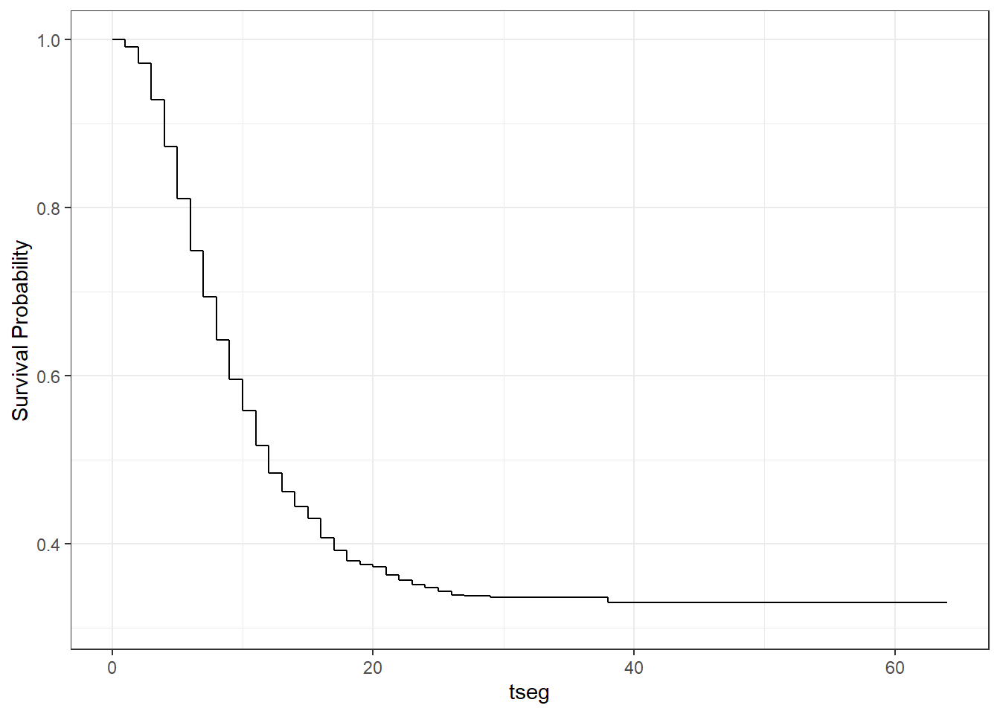

Vamos a resolver una serie de ejercicios acerca de gráfocps de variables categóricas. Usaremos un conjunto de datos juguetes acerca de casos de pacientes con Ébola que se atendieron en hospitales de África. Estos datos están disponibles en el libro The Epidemiologist Handbook.
Cargar paquetes
Código
library(tidyverse) # Paquete con paquetes de funciones diverssa: {dplyr}, {ggplot2}
library(rio) # Navaja suiza de la importacion de datos en Rlibrary(skimr) # Exploración de datoslibrary(summarytools) # Para generar estadísticos descriptivos
Attaching package: 'summarytools'
The following object is masked from 'package:tibble':
view
Código
library(lubridate) # Paquete para manipular fechas usando estilo R tidy
Attaching package: 'lubridate'
The following objects are masked from 'package:base':
date, intersect, setdiff, union
Código
library(survival) # Paquete principal para análisis de datos tiempo-eventolibrary(ggsurvfit) # Paquete para análisis de datos tiempo-evento usando tidy style (ggplot2)library(survminer) # Paquete para analisi de datos tiempo-evento usando tidy style
Loading required package: ggpubr
Attaching package: 'survminer'
The following object is masked from 'package:survival':
myeloma
Crear los datos de tiempo a evento y el indicador del evento
Código
ebola_data_small %>%mutate(# Convertir a fechas:date_onset =ymd(date_onset), date_outcome =ymd(date_outcome), # Crear la variable tiempo a evento (notar que hay valores negativos implausibles)tseg =as.double(date_outcome - date_onset), # Convertir valores negativos a datos perdidostseg =case_when( tseg <=0~as.numeric(NA), tseg >0~ tseg,TRUE~as.numeric(NA) ), # Crear la variable indicadora de muerte / censura (1 vs 0)muerte =case_when( outcome =="Recover"~0, outcome =="Death"~1,TRUE~as.numeric(NA) ) ) -> ebola_data_small2
Verificando creación de variable muerte:
Código
table(ebola_data_small2$muerte, useNA ="always")
0 1 <NA>
1983 2582 1323
Nota: Si la fecha esta en otros formatos, solo se permuta la y, m y d:
“13-02-2021” –> dmy(“13-02-2021”)
“02-13-2021” –> mdy(“02-13-2021”)
Calcular tasa/ densidad de incidencia
Dado que tenemos datos individuales, podemos calcular la densidad de incidencia de muerte:
# Esta salida me generaria error porque tabla_de_vida_resultado_rbase no es ni un data.frame ni un data.tibble# tabla_de_vida_resultado_rbase %>% # select(time, n.event, n.risk, survival)
Crear curva de supervivencia mediante método de Kaplan-Meier
R base con plot() de {survival}
Código
plot(tabla_vida)

R tidy con ggsurvfit() de {ggsurvfit}
Código
tabla_vida2 %>%ggsurvfit()

Extra: R tidy con ggsurvplot() de {survminer}
Código
tabla_vida %>%ggsurvplot()
Personalizar curvas de supervivencia de {ggsurvfit}
Código
tabla_vida2 %>%ggsurvfit(color ="skyblue", size =1) +# Creas el grafico y configuras color y tamaño de lineaadd_risktable(theme =theme_risktable_boxed()) +# Agregas tablas de riesgo y configuras tema de tablaadd_censor_mark(color ="skyblue") +# Agregas marcas de censuras y configuras colortheme_minimal() +# Configuras tema general del gráficolabs( # Configuras etiquetas del gráficoy ="Tiempo de seguimiento (días)", x ="Supervivencia Acumualda (%)" )
Correr el código
---title: "Taller: Descripción de variables de tiempo"author: "Percy Soto Becerra"---## IntroducciónVamos a resolver una serie de ejercicios acerca de gráfocps de variables categóricas. Usaremos un conjunto de datos juguetes acerca de casos de pacientes con Ébola que se atendieron en hospitales de África. Estos datos están disponibles en el libro [The Epidemiologist Handbook](https://epirhandbook.com/en/index.html).## Cargar paquetes```{r}library(tidyverse) # Paquete con paquetes de funciones diverssa: {dplyr}, {ggplot2}library(rio) # Navaja suiza de la importacion de datos en Rlibrary(skimr) # Exploración de datoslibrary(summarytools) # Para generar estadísticos descriptivoslibrary(lubridate) # Paquete para manipular fechas usando estilo R tidylibrary(survival) # Paquete principal para análisis de datos tiempo-eventolibrary(ggsurvfit) # Paquete para análisis de datos tiempo-evento usando tidy style (ggplot2)library(survminer) # Paquete para analisi de datos tiempo-evento usando tidy style```## Importar datos```{r}ebola_data_small <-import("ebola_data_small.rds")```## Análisis Inicial de Datos- Ver 6 primeras filas:```{r}head(ebola_data_small)```- Vistazo a datos:```{r}ebola_data_small %>%glimpse()```- Un poco má de detalles:```{r}ebola_data_small %>%skim()```- Veamos los datos categoricos: ```{r}# ebola_data_small %>% # freq()```- Veamos los datos numéricos: ```{r}# ebola_data_small %>% # descr()``````{r}table(ebola_data_small$outcome, useNA ="always")```## Crear los datos de tiempo a evento y el indicador del evento```{r}ebola_data_small %>%mutate(# Convertir a fechas:date_onset =ymd(date_onset), date_outcome =ymd(date_outcome), # Crear la variable tiempo a evento (notar que hay valores negativos implausibles)tseg =as.double(date_outcome - date_onset), # Convertir valores negativos a datos perdidostseg =case_when( tseg <=0~as.numeric(NA), tseg >0~ tseg,TRUE~as.numeric(NA) ), # Crear la variable indicadora de muerte / censura (1 vs 0)muerte =case_when( outcome =="Recover"~0, outcome =="Death"~1,TRUE~as.numeric(NA) ) ) -> ebola_data_small2```- Verificando creación de variable muerte: ```{r}table(ebola_data_small2$muerte, useNA ="always")```- **Nota:** Si la fecha esta en otros formatos, solo se permuta la y, m y d:"13-02-2021" --> dmy("13-02-2021")"02-13-2021" --> mdy("02-13-2021")## Calcular tasa/ densidad de incidencia- Dado que tenemos datos individuales, podemos calcular la densidad de incidencia de muerte:```{r}ebola_data_small2 %>%summarise(densidad_incidencia =100*sum(muerte, na.rm =TRUE) /sum(tseg, na.rm =TRUE))```La densidad de incidencia de muerte en pacientes con ébola fue de 4.84 muertes por 100 días-persona.## Configurar objeto survival para cálculo de incidencia/supervivencia acumulada```{r}# Surv(tseg, muerte) ~ 1``````{r}tabla_vida <-survfit(Surv(tseg, muerte) ~1, data = ebola_data_small2)```## Imprimir tabla de vida```{r}tabla_vida```### R base con summary()```{r}summary(tabla_vida)```### R tidy con survfit2(), tidy_survfit() de {ggsurvfit}```{r}tabla_vida2 <-survfit2(Surv(tseg, muerte) ~1, data = ebola_data_small2)```- Tabla de vida con estimados de supervivencia acumulada:```{r}tidy_survfit(tabla_vida2)```- Tabla de vida con estimados de incidencia acumulada:```{r}tidy_survfit(tabla_vida2, type ="risk")```- Solo extraer tiempo, n.event, n.risk y estimado de IA```{r}tidy_survfit(tabla_vida2, type ="risk") %>%select(time, n.event, n.risk, estimate)``````{r}tidy_survfit(tabla_vida2, type ="risk") -> tabla_de_vida_resultado``````{r}tabla_de_vida_resultado %>%select(time, n.event, n.risk, estimate) %>%mutate(estimate = estimate *1000)``````{r}summary(tabla_vida) -> tabla_de_vida_resultado_rbase``````{r}# Esta salida me generaria error porque tabla_de_vida_resultado_rbase no es ni un data.frame ni un data.tibble# tabla_de_vida_resultado_rbase %>% # select(time, n.event, n.risk, survival)```## Crear curva de supervivencia mediante método de Kaplan-Meier### R base con plot() de {survival}```{r}plot(tabla_vida)```### R tidy con ggsurvfit() de {ggsurvfit}```{r}tabla_vida2 %>%ggsurvfit()```### Extra: R tidy con ggsurvplot() de {survminer}```{r}tabla_vida %>%ggsurvplot()```## Personalizar curvas de supervivencia de {ggsurvfit}```{r}tabla_vida2 %>%ggsurvfit(color ="skyblue", size =1) +# Creas el grafico y configuras color y tamaño de lineaadd_risktable(theme =theme_risktable_boxed()) +# Agregas tablas de riesgo y configuras tema de tablaadd_censor_mark(color ="skyblue") +# Agregas marcas de censuras y configuras colortheme_minimal() +# Configuras tema general del gráficolabs( # Configuras etiquetas del gráficoy ="Tiempo de seguimiento (días)", x ="Supervivencia Acumualda (%)" )```